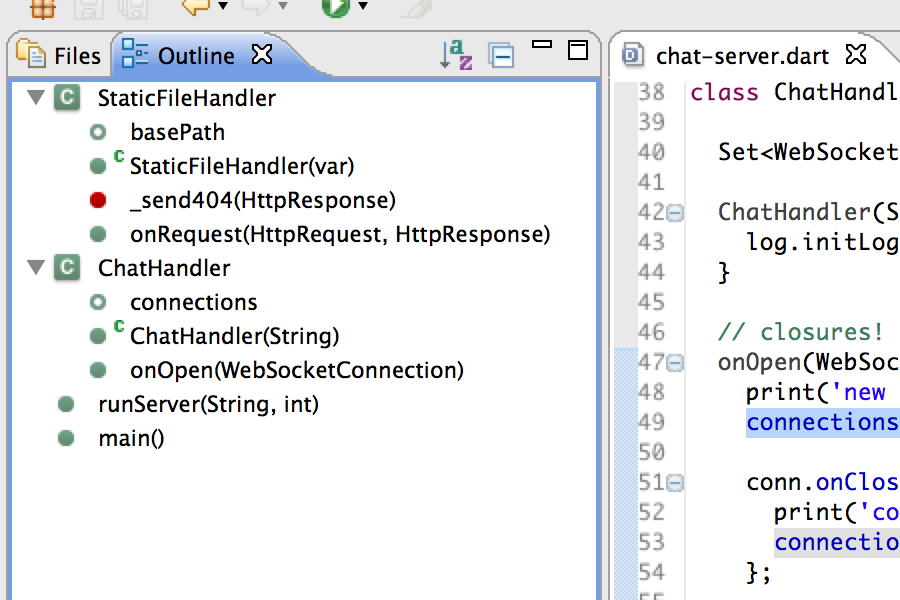

Code completion
Explore the methods and fields available to an object.

Refactoring
Change your code structure without changing the behavior.

Outline view
List the classes, methods, and functions in a simple tree display.